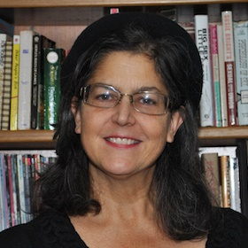
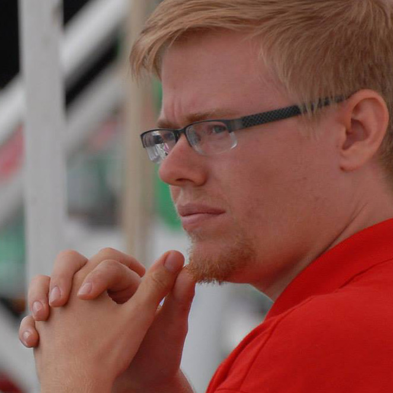

Welcome to
Jackalope Science, Inc!
Jackalope Science is a 501(c)(3) non-profit group promoting
Science, Techonology, Engineering, Art, and Mathematics (STEAM)
in Tucson, Arizona, since 2013.
Jackalope Science recognizes the need for a paradigm shift in today's culture. Our vision is to confront society's problems by empowering our youth with an appreciation of STEAM and the ability to address the challenges of the future.
Projects
Our mission is captured in four philosophies:
RoboticsUse of exciting technology to inspire young people to pursue STEM and provide them with teamwork and leadership skills
DiversityEncourage participate in technical fields from under-represented populations, such as women, minorities, and those of low socio-economic status
ToolsEnable young people to foster their inventiveness and creativity with the appropriate tools and guidance
SafetyTrain our own participants and the community at large on safety and why it matters
News
The Bit Buckets have been hard at work on their latest creation. The 2015 FIRST Robotics Competition build season is underway, and the team is several weeks into the design and testing of a laser-cut machine capable of collecting five gray totes and a recycling can (game pieces).
News
Bit Buckets 2015 Build Season Underway
The Bit Buckets have been hard at work on their latest creation. The 2015 FIRST Robotics Competition build season is underway, and the team is several weeks into the design and testing of a laser-cut machine capable of collecting five gray totes and a recycling can (game pieces).
This year's game is "Recycle Rush". Teams must create stacks of 8lb gray totes, then cap them with green recycling bins and throw away their litter (pool noodles) by placing it in the recycling bins. A large step in the center of the field separates the two alliances, creating an offensive-driven game. Read the rules here.
Using the tools on hand at the Xerocraft hackerspace, the Bit Buckets have created a functioning prototype created almost entirely out of laser-cut 1/4" plywood. It features an elevator capable of holding 5 totes, as well as an omnidirectional drivebase and can grabbing claw. Keep up-to-date on their progress on their website at www.bitbuckets.org!
Board of Directors
Terry Nordbrock (President)
Terry has served as executive director of three nonprofit organizations and leads many tasks for the Bit Buckets Robotics team: administration, fundraising, meeting coordination, safety, volunteer coordination, event planning, travel logistics, community relations, graphic design, publicity, location scouting. Terry also volunteers with Xerocraft Hackerspace as a board member and to staff their weekly Women-Trans-Femme (WTF) Open Hack Night, which has inspired her to learn welding, use of woodworking and metal-working tools, the laser cutter/engraver and a variety of software programs. Terry helps students be successful in their projects by mentoring and sharing skills at ~18 hours/week of build meetings.
- MPH, University of Arizona, 2009
- MLS, University of Arizona, 1993
- Mentor, "Bit Buckets", FRC 4183, Vex 5485, NURC. 2011-present
Gary Forbes (Vice President)
Gary is an engineering student at Pima Community College. He has been participating in competitive robotics since high school, including FRC, Vex, and NURC. Gary currently serves as a mechanical engineering mentor for the BitBuckets FRC and Vex teams. He likes to spend his free time tinkering, working on old cars, and hanging out with his dog Ellie and cat Misay.
Amy Utzinger (Secretary)
Amy is a Paralegal for the Arizona Attorney General. She has two children who are involved in FIRST Robotics, and they have been active for three years. Additionally, her husband is a FIRST mentor and a professor of Biomedical Engineering at the University of Arizona. She is working to start a FIRST FLL club at a local elementary school.
- BA University of Texas 1989
- MA University of Texas 1997
Brad Miller (Treasurer)
Brad grew up in Tucson and is now a business and real estate lawyer. On the side, Brad helps local non-profits with legal and business issues including the IRS filings needed to become tax-exempt organizations. He has two children, one of whom is an avid member of Jackalope’s Bit Buckets robotics team.
- BA Harvard College 1988
- JD Stanford Law School 1991
David Forbes
David is an electrical engineer who works at the University of Arizona in radio astronomy and is the owner of his own business, Cathode Corner, that sells hand-made wristwatches to customers around the world. He is a mentor with the Bit Buckets robotics club. David enjoys combining his loves of electronics, music and bicycling by riding his Loud Bike in festive community bike rides. When he goes to the hardware store, he rarely buys an item for its intended purpose.
Kevin Forbes
Kevin is a Master's student in the Electrical and Computer Engineering department at the University of Arizona. He has been involved in FIRST since his sophomore year in high school, acting both as participant and mentor. Kevin is president of AUVUA, a multidisciplinary autonomous underwater robot team, at the university. He enjoys programming, unicycling, and a bipolar relationship with his dog, Cooper.
- BS ECE, University of Arizona, 2013
- MS ECE, University of Arizona, exp. 2016
- Mentor, FRC 4183 "Bit Buckets", 2012-present
Diana Rix
Diana Rix is an Academic Advisor for Aerospace and Mechanical Engineering at the University of Arizona. She has 18 years of experience in student development, assisting students with meeting their academic and career goals.
Projects
Jackalope Science was organized exclusively for educational, scientific and/or charitable purposes. The mission of Jackalope Science is to kickstart a passion for science, technology, engineering, arts and math (STEAM) in young people and society as a whole, by building robots and other wonders.
1: Competitive Robotics
Our primary project is competitive robotics in which young people work with adult mentors to build high-tech robots in an environment similar to that of business. We sponsor the Bit Buckets Robotics team, which participates in a number of competitions. Their primary activity is participation in the FIRST Robotics Competition, which promotes teamwork, sportsmanship, competition without hostility such as helping an opponent fix their robot, and “gracious professionalism” ™. The mission of FIRST Robotics is
"to inspire young people to be science and technology leaders, by engaging them in exciting mentor-based programs that build science, engineering and technology skills, that inspire innovation, and that foster well-rounded life capabilities including self-confidence, communication, and leadership." FIRST, www.usfirst.org
FIRST Robotics offers a friendly, courteous atmosphere, which builds leadership and high-level social skills. The Bit Buckets also participate in the National Underwater Robotics Competition and in Vex Robotics, which is designed for middle school students. Members of the Bit Buckets Robotics team are encouraged to do outreach events to share their passion for science, mentor and launch other teams, offer educational workshops, and participate in other community projects.
2: Inclusion
Another project of Jackalope Science is the Inclusion Project, which promotes diversity in science. We work to overcome the under-representation of women and minorities interested in technical careers. The percentage of scientists and engineers who are women was a mere 24% in 2009. We strive to achieve inclusiveness in the populations we work with directly.
We plan to offer educational workshops and special outreach for women and girls in the community, as well as reach out to students with low socio-economic status and under-resourced public schools, working to connect them with private sector initiatives to ensure the economic future of the state. We provide students from lower socio-economic backgrounds the opportunity to network with professionals in industry and research and higher education. Tucson has significant populations of Latinos and Native Americans, and we reach out to spread the enthusiasm for STEAM. For instance, we will profile “Grandmothers of STEAM,” women who break the stereotype that seniors don’t compute or understand technology.
3: Maker Project
Another project of Jackalope Science is the Maker Project in support of people inventing, designing, creating and carrying out hands-on learning. Modern society offers fewer opportunities to watch people build and fix things. Most young people are not proficient with use of tools, electronics, metalworking, and do not know how to do simple tasks such as joining two pieces of wood together. In this program, youths are invited to participate in group-build projects, which will allow them to design and fabricate custom machines or devices.
One such project is the Tucson Pumpkin Toss, which builds trebuchets, catapults, and onagers to launch 4-pound pumpkins. We break the boundaries of in-school learning and help student learn by doing. We welcome everyone to self-identify as a maker and easily apply their creativity, ingenuity and technical skills to solve problems in their lives, homes, schools, workplaces, and for society itself. The Maker Project program encourages recycling, repurposing, and upcycling.
4: Safety First
We also offer a Safety First program. The robotics work and the group build projects pose potential safety risks, so we educate all of our participants to be safe while working. Moreover, our participants act as Safety Ambassadors by conducting community training and workshops. We produce safety animations and publish them online. We partner with other safety organizations. In the future we expect to increase the public training and site visits for our community.
Sponsors
Jackalope Science could not operate without the generous monetary and in-kind donations from our sponsors.
As of June 11th, 2014, Jackalope Science, Inc. is recognized by the IRS as a 501(c)(3) non-profit organization.
Our EIN is: 46-2312416

{kind=link}
Contact Us
Jackalope Science is constantly looking for ways to improve and areas to expand.
Feel free to contact us with any questions, concerns, or other feedback.
Send an email to our President, Terry Nordbrock, at terry@bitbuckets.org.